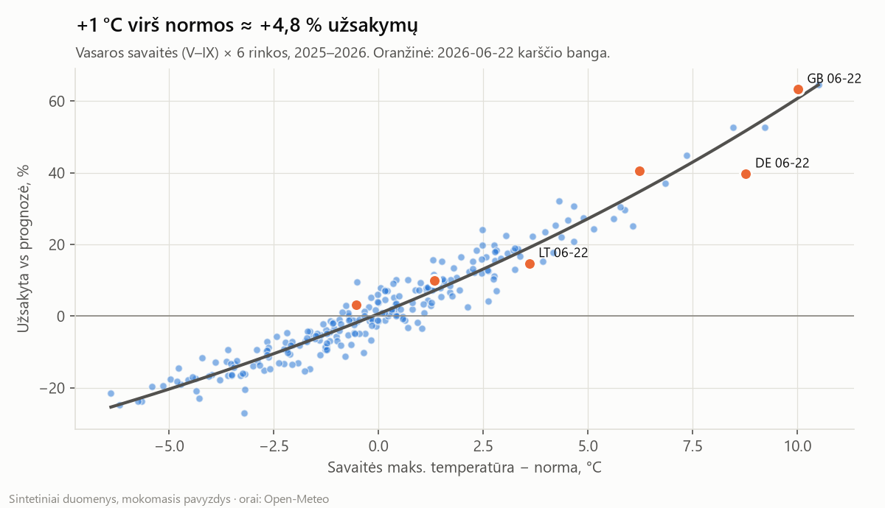
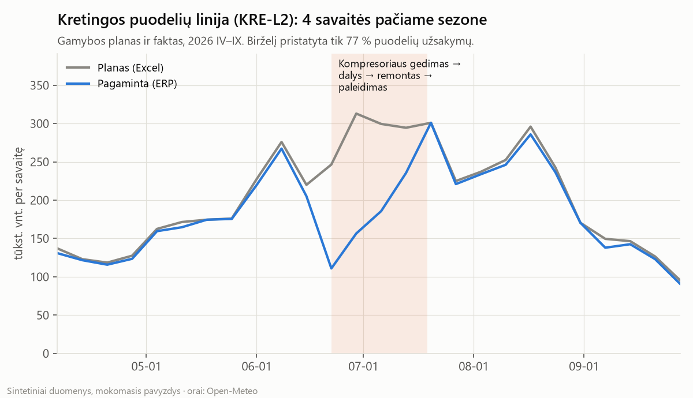
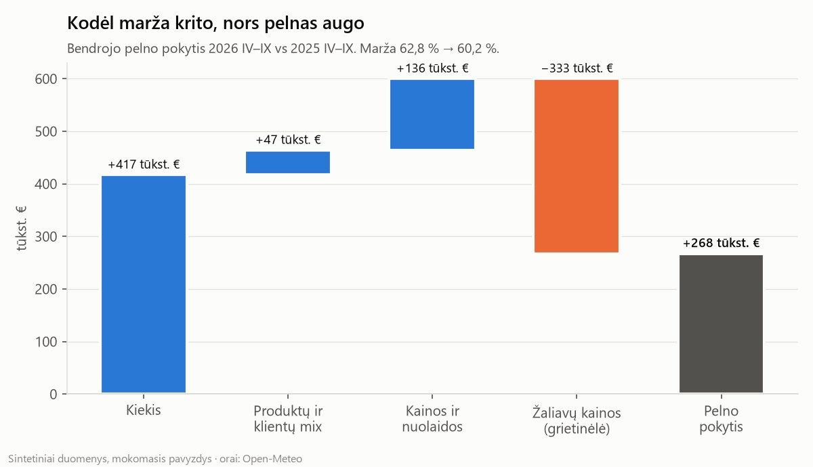

1 · Paklausa
Karščio banga, kurios planas nenumatė
2026-06-22 savaitę Londone buvo +10 °C, Berlyne +8,8 °C virš normos (tikri Open-Meteo orai). Planuotojas prognozuoja pagal įprastą sezoną, todėl JK užsakymai viršijo prognozę 63 %.
Iš istorijos matyti: +1 °C virš normos ≈ +4,8 % užsakymų (vien vasaros savaitėms +4,5 %). Su orų pataisa ta savaitė būtų prognozuota 0,3 % tikslumu.

2 · Gamyba ir kokybė
Tą pačią savaitę sugenda puodelių linija
Kretingos linijos KRE-L2 šaldymo kompresorius sustoja pačiame sezone: gedimas, dalių laukimas, remontas. Birželį pristatyta tik 77 % puodelių užsakymų, prarasta ~200 tūkst. € pajamų.
Kol tunelis nepasiekė −35 °C, ledai grūdinti per šiltai, todėl iš tų partijų skundų atėjo 17 kartų daugiau (ledo kristalai).

3 · Pelnas
Marža krito, nors pardavimai augo
Grietinėlė nuo balandžio pabrango +18 %. IV–IX pajamos augo 8,9 %, o marža krito 62,8 % → 60,2 %.
Bendrasis pelnas vis tiek +268 tūkst. €: kiekis +417 tūkst., kainos +136 tūkst., mix +47 tūkst., žaliavos −333 tūkst. €.
